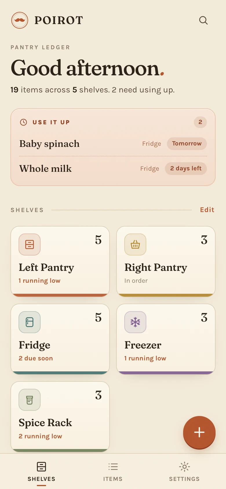
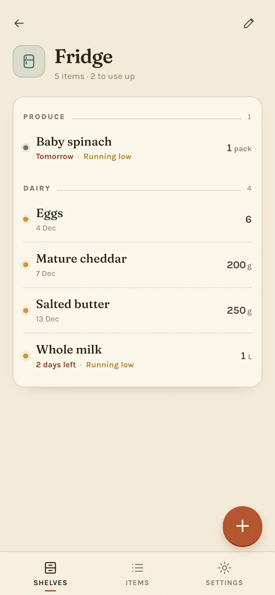
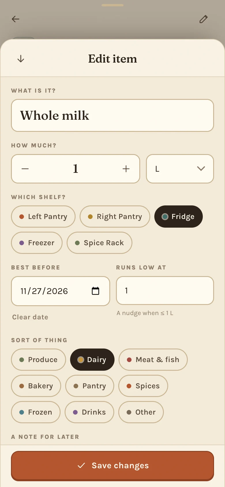
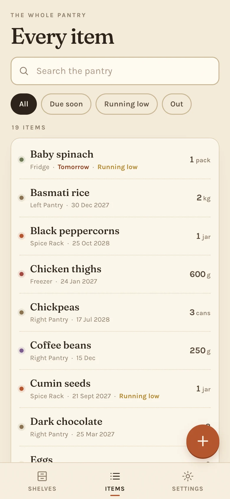

Android · free · open source
Every jar,
accounted for.
Poirot is a pantry ledger for Android. What is on the shelf, how much is left, and what needs using up before it turns. It knows nothing about the internet, and it likes it that way.
5.9 MBarm64Android 7.0+no account

a look inside
Organised the way a kitchen
actually works.
No folders, no categories to maintain. Name the places you really keep food, and Poirot keeps the count.



what it keeps
A small ledger,
faithfully kept.
-
01
Shelves you name yourself
Left pantry, right pantry, fridge, freezer, spice rack, or whatever your kitchen actually has. Rename, recolour, reorder, remove.
-
02
Quantities that make sense
Grams, kilos, litres, packs, jars, tins, loaves. Poirot handles the plurals so you can write "two loaves" and mean it.
-
03
Use it up
The home screen puts anything expiring soon, or already past its date, where you will see it before it is too late.
-
04
Running low
Set a threshold on anything worth watching. Poirot nudges you when the jar is nearly scraped out.
-
05
A note for later
"The good one, two portions left." A single line of context on any item, kept with it.
-
06
Backups you can read
Copy the whole pantry out as plain JSON and restore it anywhere. Your ledger, in a format that outlives the app.
local, quietly
On your phone.
Nowhere else.
The pantry is a few kilobytes of JSON in your phone's own storage. There is no server to sign into and nothing to sync, because nothing is sent anywhere. Install it, use it, and if you ever want out, take the backup file with you.
- Storage
- this device
- Network
- never used
- Account
- none
- Tracking
- none
- Licence
- MIT
- Built with
- Tauri · React
get it
Two ways in,
both free.
The APK, straight from the source
Signed, arm64, built from the tagged release. Sideload it and you are done.
Poirot 1.0.2sha256 75bee5781bec4d5b242ad6adb8b78adb31ac2c47ded28862b97dd80212c49add
Through our F-Droid repo
Add the repo once and Poirot arrives with the rest of our apps, updates included, without a store account.
Open the repo pageocciderunt.github.io/f-droid/repo
Android 7.0 (API 24) or newer · arm64-v8a · package org.vellum.poirot · screenshots taken on Android 17.